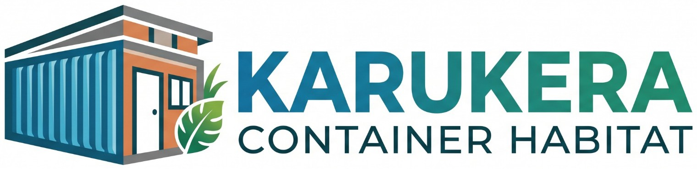

Chantiers livrés dans les délais
Organisation
62%
objectif 90 %
0 %100 %
Écart : 28 points sous l’objectif

Comment améliorer les performances de Karukera Container Habitat, constructeur de maisons containers en Guadeloupe.
Mais avant tout…
Tout d’abord, après analyse de la situation, nous avons identifié plusieurs difficultés.
Face à ces résultats…
Très bien !
C’est justement notre deuxième priorité : renforcer la qualité des réalisations.
Et l’environnement ?
Oui ! C’est notre troisième priorité : développer une démarche environnementale.